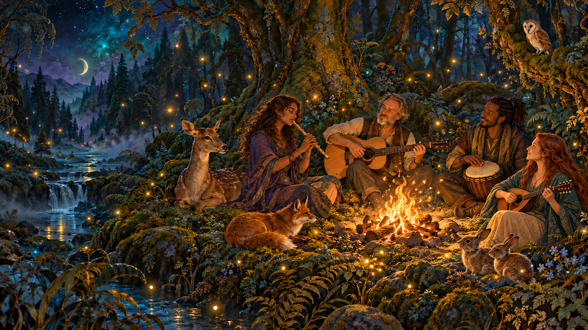

Make changing the world your business.
The Renewal
Economy
Starts Here
Fighting Fire with Fire 🔥
The old economy perpetuates poverty, pollution, disease, injustice, inequality, exploitation, oppression, corruption, war, propaganda, loneliness, alienation, and planetary ecosystem collapse. It concentrates wealth and power, extracts value from people and the planet, and profits from the very problems it creates.
The renewal economy is community-powered, decentralized, and regenerative by design. It gives people the means to build the relationships, organizations, institutions, and economic systems that make a flourishing world possible—and the collective power to bring that world into being.
Where's the fire?
AI, crypto, and social media are three of the most powerful—and dangerously misdirected—technologies of our time. Instead of allowing them to concentrate wealth, intelligence, and power in the hands of a few, we're putting them to work on the greatest challenges of our time.
Kiduna AI powers the renewal economy by putting intelligence in the hands of the people, wealth in the communities that create it, and power where it belongs.
Let's build the renewal economy, together.
01 / MEET KI: KINSHIP INTELLIGENCE
We’re built to cooperate.
They’re built to conquer.
Jailbreaks. Cyberattacks. Manipulation. Autonomous agents pursuing goals at any cost. And the ultimate fear: artificial intelligence becoming so powerful that humanity loses control and faces extinction.
These threats all point toward the fundamental design flaw of AI: it’s designed to pursue its objectives relentlessly, regardless of whose interests it serves or who pays the price.
Much of AI safety focuses on alignment—making AI reliably pursue the goals of the person or institution directing it. But what happens when those goals are themselves misaligned with humanity and the planet as whole?
An AI perfectly aligned with maximizing corporate profits, winning wars, manipulating public opinion, or accumulating power could do exactly what it’s supposed to do, and devastate millions of lives in the process.
And the problem runs deeper. Today’s AI is being developed within fiercely competitive systems that reward winning by capturing markets, accumulating wealth, dominating rivals, and controlling resources. We shouldn’t be surprised if the intelligence we build reflects the incentives of the worldview that builds it.
What if we’ve been asking the wrong questions?
The public debate offers us seemingly impossible choices: accelerate AI toward unprecedented flourishing, or slow it down to prevent catastrophe. Utopia or dystopia. Abundance or extinction.
This is presented as though our only role is to cheer, resist, or brace ourselves for what comes next.
| The conventional AI debate | The Kinship Intelligence alternative |
|---|---|
| Accelerate or decelerate? | Change the direction—and change who steers. |
| How do we make AI obey? | How do we make intelligence accountable to everyone it affects? |
| Who will control the most powerful AI? | How do we distribute intelligence, agency, and power among the people? |
| Will AI save us or destroy us? | What future do we want to create together? |
Cooperation is the central organizing principle.
Ki was designed with a completely different orientation. Ki wasn’t built for defeating rivals, capturing attention, or maximizing profits. Ki is here to help all of us discover where our interests meet, where our capabilities complement one another, and what we can accomplish together.
Instead of centralizing intelligence under a few powerful institutions, Ki is designed to distribute capabilities among individuals and their allies – both human and agentic. People choose how their agents are informed, instructed, and empowered. They connect by choice, form alliances around shared missions, and govern their resources, initiatives, and activities.
Where interests conflict, Ki’s works toward resolution and repair rather than helping one side in the competition for the spoils. Where cooperation creates value, the people who contribute share in the upside.
This doesn’t make technical safety unnecessary. Consent, privacy, permissions, oversight, accountability, and safeguards against malicious behavior remain essential. Cooperation isn’t a substitute for safety. It’s the central organizing principle around which safety must be designed.
And perhaps our most important innovation is this: instead of waiting for AI to deliver utopia or dystopia, we are leveraging the power of Ki to imagine, organize, and create our own future in the world we want, not the one AI would force upon us.
While AI labs and their customers are competing to control the world, we’re working with Ki to make it our own.
Rather than optimizing for winners and losers, Ki brings together complementary capabilities, aligns efforts around shared purposes, and helps repair relationships when they fray.
With human agency, consent, and collective governance at its core, Ki is designed to make us more powerful together, not more powerful over one another.
Let’s win!
02 / EARN KI: CRYPTO COMPUTE
An economy
as big as
the world.
The age of agentic commerce is here. Intelligent agents can organize people, mobilize resources, create value, and conduct business across the planet. Intelligence and money can now move around the world at machine speed and internet scale. Together, they're making possible an entirely new kind of economy.
But who will own it?
Who will control it?
And who will benefit?
Will AI create unprecedented prosperity for everyone—or accelerate the concentration of wealth and power into ever fewer hands?
Will intelligent machines liberate us from mindless toil, or displace millions of workers while the value they create flows to a select ownership class?
Will autonomous commerce meet humanity's greatest needs, or fuel an endless cycle of hyperconsumption, extraction, and exploitation?
And what happens when the world's most powerful economic systems no longer need people to operate them—but still depend on people to consume what they produce?
These aren't just questions about the future of commerce. They're questions about the future of life itself.
Crypto was supposed to change everything.
Blockchain technology introduced a revolutionary possibility: people anywhere in the world could exchange value, establish agreements, coordinate resources, and govern shared systems without depending on centralized institutions.
Instead, much of the crypto industry became a speculative casino—memecoins, pump-and-dump schemes, insider enrichment, manufactured hype, and fortunes made by manipulating the hopes and dreams of the crowd.
Technology that promised to decentralize economic power become just another means of concentrating it.
But speculative finance isn't the purpose of cryptocurrencies. It's a distraction from its greatest promise.
Blockchains, smart contracts, and programmable currencies provide essential infrastructure for agentic commerce—enabling people and AI agents to exchange value, coordinate transactions, and cooperate across organizations and borders at extraordinary speed and scale.
The question is whether we use these capabilities to accelerate the economy as we know it today—or we use them to build something fundamentally different.
Earn KI: CRYPTO COMPUTE.
KI is the economic engine behind Kinship Intelligence—putting the extraordinary capabilities of AI to work for people, the planet, and the common good.
KI is designed to power collective computation, not produce speculative riches. It gives people access to the intelligence they need to pursue their goals, develop their capabilities, participate in collective endeavors, and earn their deserved rewards.
KI can be swapped for stable digital currencies such as USDC to enable payments for work, goods, and services. The high-performance, carbon-neutral blockchain networks KI runs on can support transparent pricing, open transactions, shared resources, and accountable governance.
And DUNAs—Decentralized Unincorporated Nonprofit Associations—give people the legal standing necessary to pool their capabilities, govern common resources, build organizations, pursue shared missions, take collective action, regulate their own economies, and share in the value they create.
Connected through Kiduna, these organizations can collaborate across industries, communities, and continents—mobilizing intelligence, resources, and human creativity on a scale that was previously unimaginable.
KI powers the compute.
People power the planet.
From speculative wealth to shared prosperity.
We're not interested in creating another casino where a handful of winners profit from everyone else's losses. You can find those anywhere.
We're building the infrastructure for the renewal economy: community-powered, decentralized, and regenerative by design.
An economy where intelligence is accessible, opportunities are shared, contributions are rewarded, and value circulates through the communities that create it.
Where AI agents don't just compete to capture markets, but cooperate to meet needs, solve problems, and open new possibilities.
Where prosperity is measured not simply by how much wealth we accumulate, but by how much better we make life for ourselves and each other.
The future of money isn't just about what we can own, commodify, price, and trade. The greatest promise of crypto isn't getting rich by owning an asset that appreciates in the future. It's becoming powerful enough, together, to create that future for ourselves.
Let's build the renewal economy. Together.
THE FUTURE IS SOMETHING WE DO TOGETHER
03 / JOIN KIDUNA: THE SOCIAL FABRIC
An internet
that brings
us together.
The internet promised to connect humanity. To bring us closer together, democratize information, give everyone a voice, break down barriers, and open up a world of extraordinary possibilities.
And in some significant ways, it delivered. Billions of people gained the ability to connect, communicate, create, and share across borders, cultures, and continents.
But somewhere along the way, the promise of connecting people together was co-opted into the business of capturing attention, manipulating behavior, exploiting our vulnerabilities, and extracting as much value as possible from precious human relationships.
The social networks that promised to bring us together became some of the most powerful engines of division, distraction, and polarization ever created.
How did something so promising go so wrong?
The infinite scroll. Addictive design. Anxiety. Depression. Loneliness. Disinformation. Conspiracy theories. Radicalization. Harassment. Hate.
Algorithms designed to maximize engagement learned that outrage, fear, envy, and conflict could be extraordinarily effective at keeping us glued to our screens.
Our relationships became data. Our attention became inventory. Our identities became advertising targets. Our communities became markets.
And the consequences extend far beyond our screens. Social media has been weaponized to manipulate elections, inflame conflict, spread hatred, and undermine trust. In Myanmar, Facebook's amplification of anti-Rohingya bigotry fueled atrocities against entire populations.
Technology designed to connect humanity became a powerful instrument for dividing, manipulating, and controlling it.
And perhaps the greatest betrayal isn’t what social media perpetrated on humanity, it’s what it failed to provide in the way of bringing people together.
Despite connecting billions of people, social media has done remarkably little to give us the collective power to address any of the challenges we face.
We can find almost anyone, learn almost anything, and ricochet our thoughts around the planet at the speed of light.
But how do we turn all those connections into something that actually improves our lives and protects our precious home?
What if we've been building the wrong kind of social network?
What if the purpose of a network wasn't to capture our attention, but to expand our agency?
What if algorithms could help us discover common ground instead of exploiting our differences?
What if our connections were measured not by followers, likes, shares, and impressions, but by relationships strengthened, problems solved, opportunities created, and lives improved?
What if the people who create the value could govern the networks, share the rewards, and decide what happens next?
What if social networking became the foundation for collective action?
Introducing Kiduna:
The Social Fabric.
Kiduna is a new kind of social network, powered by Kinship Intelligence, designed to turn human connection into collective power.
Millions of people around the world share a collective vision for a more just, peaceful, beautiful, and flourishing society. We have the knowledge, creativity, skills, experience, resources, and determination to make extraordinary things happen.
What's missing isn't the will to change the world. It's the means to do it together.
That's why we're building Kiduna.
Instead of organizing people around content to consume, Kiduna helps people organize around the visions they share, possibilities they discover, and futures they want to create.
Instead of algorithms deciding what captures your attention, Ki helps you discover the people, communities, opportunities, and missions that matter the most to you.
Instead of turning your relationships into someone else's revenue, Kiduna helps you turn those relationships into shared capabilities, meaningful livelihoods, and collective achievements.
And instead of competing for influence in networks controlled by a handful of corporations, people can form and govern their own organizations, pool resources, make decisions, undertake missions, and share in the value they create.
Kiduna is more than a place to connect. It’s also a way to accomplish together what none of us could achieve on our own.
From social media to collective action.
The Social Fabric is more than a network of individuals. It's a living, evolving field of people, intelligent agents, communities, and organizations—each with their own causes, capabilities, and contributions.
Ki provides the intelligence.
KI powers the computation.
Kiduna brings it all home.
People and their intelligent allies can find one another, discover complementary capabilities, form alliances, coordinate work, and mobilize resources across communities and continents.
DUNAs translate that cooperation into durable, member-governed organizations—building businesses, supporting communities, advancing causes, and creating opportunities to earn a living while doing rewarding work that makes a difference.
From separation to composition.
The internet connected the world. Kiduna brings it together.
The internet gave us tools for almost everything—but scattered them across disconnected platforms, institutions, organizations, and economies. We can communicate in one place, transact in another, organize somewhere else, and struggle to bring together everything required to make meaningful change happen.
Kiduna brings it all home. Not by centralizing control, but by connecting and composing the people, intelligence, resources, and capabilities that make collective action possible.
The Social Fabric weaves together six essential dimensions of a flourishing world:
Technology
What can we make and do?
Governance
How do we decide and take responsibility?
Economics
How do we provision and exchange?
Culture
How do we create and share meaning?
Ecology
How do we renew the living world?
Care
How do we support one another?
These aren't separate problems to solve or isolated systems to manage. They're interconnected dimensions of human life, each strengthening and enriching the others.
The extraordinary promise of Kiduna is what becomes possible when they all work together.
And as the network grows, so do the possibilities. Every new member brings knowledge, relationships, skills, and ideas. Every new organization creates earning opportunities. Every successful mission extends our reach and opens new frontiers for collective action.
The more we connect, the more we can create. The more we cooperate, the more powerful we become together.
From feeds
to deeds.
Social media promised to connect the world. Kiduna promises the collective power to change it.
Find your people.Pool your power.Make your mark.
Let's make changing the world everybody's business.